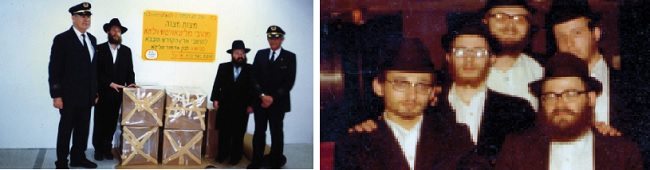

אירועי חג הפסח תשל”ג: המפגש של ה’תהלוכה’ עם חסידי סאטמער, ההתייחסות של הרב עלבער
אירועי חג הפסח תשל”ג: המפגש של ה’תהלוכה’ עם חסידי סאטמער, ההתייחסות של הרב עלבערג ל”תכונות המלכות של הרבי מליובאוויטש”, התייחסותו של הרבי לסוד ההצלחה בהשפעה על אנשים רבים, ההבדל בין יהודי לגוי, ומדוע קל יותר לקיים מצוות בחוץ לארץ… * פנינים מיוחדים נחשפים במכתבי-יומנים מאירועי בית חיינו בשנת תשל”ג, ש
אירועי חג הפסח תשל”ג: המפגש של ה’תהלוכה’ עם חסידי סאטמער, ההתייחסות של הרב עלבערג ל”תכונות המלכות של הרבי מליובאוויטש”, התייחסותו של הרבי לסוד ההצלחה בהשפעה על אנשים רבים, ההבדל בין יהודי לגוי, ומדוע קל יותר לקיים מצוות בחוץ לארץ… * פנינים מיוחדים נחשפים במכתבי-יומנים מאירועי בית חיינו בשנת תשל”ג, שכתב למשפחתו ולידידיו הרה”ת יקותיאל מנחם ראפ ע”ה, משגיח ישיבת תות”ל המרכזית - 770, מנהל בית חב”ד בשדה-התעופה והמטה להצלת העם והארץ

“פגשתי אותו לראשונה בתחנה מרכזית”, מספר הרה”ח ר’ רפאל שי’ חירותי, מנחלת–הר–חב”ד שבקרית מלאכי, “היה זה בעודי צעיר מתקרב ליהדות ולחסידות. נסעתי אז לשבת ראשונה בישיבה בכפר חב”ד, ובתחנה המרכזית הבחין בי בחור חב”די צעיר. הוא ניגש אליי ומיד שאל אותי: “הנחת היום תפילין”? עניתי שאני בדיוק בדרכי לישיבה בכפר חב”ד, אך הוא היה ממוקד מטרה, ואמר לי: “קודם תניח תפילין”, ומיד קרא לעבר הבחור הנוסף שאייש עמו את הדוכן: “זמרוני, בוא תניח לו”…
“כך הכרתי את הרב קותי ראפ ע”ה, ואת יבדלחט”א - הרב זמרוני שי’ ציק, שליח הרבי מלך המשיח בבת–ים. הקשר בינינו נמשך עם השנים, כשהפכתי לתלמיד הישיבה בכפר חב”ד, וכשהרב ראפ נסע לרבי, שלח לי מכתבים עם יומנים מהמאורעות שחווה במחיצת הרבי. מסתבר שהיו אלו צילומים של חלקים מהמכתבים שכתב למשפחתו. לצערי אני לא מוצא את כל המכתבים, אך שניים מהם תחת ידי, וכשהגעתי לנחם את משפחתו של הרב ראפ, הענקתי להם צילום מהמכתבים”.
הרב חירותי מסר את המכתבים לפרסום בבית משיח, והתודה נתונה לו בשם הקוראים.
נראה ששני המכתבים הראשונים מתארים את אותה תקופה - ימי חג הפסח תשל”ג, כאשר בכל מכתב מופיעים פרטים שלא נכתבו במכתב השני. אשר לכן, כמעט מבלי לשנות את הלשון המקורית, הוכנסו למכתב הראשון כל הפרטים המדברים על אותם האירועים, ואילו תיאור האירועים שאינם מדוברים כלל במכתב הראשון, נותרו במלואם במכתב השני.
תיאור מביקור הרבי
ב”ה
ימי חג הפסח תשל”ג.
אצלנו עבר חג הפסח בהתרוממות הרוח ושמחה עילאיים במלוא מובן המילה. ואכתוב מעט מאירועי (וחוויות) החג במחיצת הרבי שליט”א:
הסדרים וסעודות החג התקיימו באולם ה’פארבאנד’ שהוכן במיוחד לקראת פסח, (לא במטבח של פנימיית הישיבה, שבו אוכלים כל השנה). לאחר תפלת מעריב לפני הסדר הראשון, אחרי שכ”ק אד”ש גמר לחלק ממצות המצווה לאלה שלא הספיקו להגיע לרבי בתור הארוך שנמשך מספר שעות בערב פסח, והם קיבלו לאחר מעריב - זכינו שעלה הרבי (על שטיח אדום שהכינו במדרגות לכבודו) לאולם שערכנו הסדר וסקר את הבחורים ואת הקערות אם מסודרות כמנהג.
הוא נכנס למטבח ונתן ברכה למוסי’ המבשלת, וחזר לאולם וברך אותנו בזה הלשון: “חג הפסח כשר ושמח ולשנה הבאה בירושלים ולקיום היעוד א–לקי ישראל עושה נפלאות לבדו אמן ואמן” (תהלים פרק עב). בסיום הברכה צעד הרבי לעבר הפתח כשהקהל, שמנה כמה מאות בחורים, שרו את הניגון החדש לכבוד שנת ה–72 של הרבי: “יפרח בימיו צדיק וגו’” (תהלים פרק עב).
לאחר מכן ביקר הרבי גם בישיבת “הדר–התורה” (הישיבה המיוחדת לסטודנטים בעלי תשובה), באולם שבו הבחורים ערכו את הסדר, וברך את הבחורים. אחר כך עלה הרבי וסייר בכל הבנין שם, בזאל שלהם ובחדרי הלימוד והשינה שם, ורצה גם לעלות לגג ושאל אם יש שם סוכה לסוכות, הרבי אמר שם: “מילא אצל הבחורים משתמשים בכלים (צלחות וכו’) מנייר בפסח, אבל כאן (בהדר–התורה) צריכים להשתמש בכלים יותר יקרים”… כשיצא הרבי מהבנין שם, עשה בידו סימן להתפעלות.
ביום ה’, א’ דחול המועד (בחו”ל) התקיים כאן באולם הפארבאנד “כינוס תורה” של בני הישיבות בקראון–הייטס, והשתתפו גם מעט בחורים שגרים כאן ולומדים בישיבות אחרות. בחורים מהישיבה כאן ומעוד כמה ישיבות באמריקה ומארצות אחרות אמרו פלפולים של חידושי תורה במשך כמה שעות. הכינוס אורגן על–ידי הת’ זלמן וילשאנסקי. בנוסף התקיים ב–770 הכינוס תורה הקבוע שהרב מענטליק מארגן ובו דיברו ר”י ואברכים.
בשביעי של פסח לפנות ערב (כבכל שנה) הלכו כאן כל הקהל העצום המונה אלפי איש ב”תהלוכה” מלווה בשירה לשכונת וילאמסבורג (ולעוד כמה שכונות), מהלך כשעה מקראון–הייטס (שכונתנו), כדי לשמח יהודים בבתי הכנסת בשמחת יום–טוב ולמסור להם משיחות הרבי ומהמכתב הכללי (המיועד “אל כל בני ובנות ישראל בכל מקום שהם”) שכתב הרבי לקראת החג.
בזמן ה”תהלוכה” ירד גשם שוטף, אבל זה לא מנע מחיילי הרבי למלא ההוראה וללכת, ובשמחה! שמעתי שהכריזו אותו יום בסאטמער בשם רבם שלא יריבו ויקבלו את ליובאוויטש בסבר פנים יפות. ואמנם בוילאמסבורג נתקבלנו בסבר פנים יפות, ובהתפעלות על המשמעת של חסידי ליובאווויטש. אחרי שכולם גמרו את המשימות בבתי הכנסת התאספו לכיכר הרחוב ואחד החסידים הקריא את מכתב הרבי בפני הקהל הרב שהתאסף שם מתושבי השכונה, והריקודים נמשכו זמן רב ובשעה מאוחרת בלילה חזרנו לקראון–הייטס.
בהתוועדות הגדולה של אחרון–של–פסח דיבר הרבי על “גשמי הברכה שליוו אותנו ב”תהלוכה” ו”רקדו” איתנו (בבגדים) בזמן ששימחנו יהודים בשמחת יום–טוב. ההתוועדות החלה לפני השקיעה ונמשכה כשבע שעות (מ–6:30 עד 1:30 בערך).
בסוף ההתוועדות נתן הרבי משיירי המצה שלו להרב מענטליק כדי שיחלק ב”כינוס–תורה” למחרת (בו השתתף גם הר”ש עלבערג, שאחרי שאמר פלפול, דיבר על “תכונות המלכות של (הרבי מ)ליובאוויטש”) וכן הרבי אמר שהמשך הסיום של כתובות בענין ימות המשיח - שהתחיל בי”א ניסן - זוהי השתתפותו בכינוס–תורה (ר’ יואל כהן חזר על זה בכינוס), וגם בשבת שאחרי פסח המשיך הרבי בענין הרמב”ם הזה.
אחרי ברכת המזון (שהרבי עצמו ברך על הכוס), מעריב והבדלה, חילק הרבי מגביעו, “כוס של ברכה”, לכוסו של כל אחד ואחד מאלפי המשתתפים שעברו לפניו בתור במשך כשלוש שעות, עד אחרי 3:15. רבים ביקשו גם עבור קרוביהם וידידיהם, שישלחו להם למדינות אחרות. הרבי בעצמו ניצח על השירה והשמחה בזמן חלוקת ה”כוס של ברכה”. לפנות בוקר יצא הרבי את האולם לאחר שהתחיל בעצמו הניגון “כי בשמחה תצאו וגו’”.
אשרי עין ראתה (ואוזן ששמעה השיחות והשמחה) כל אלה… משיחות התורה בהתוועדות אכתוב אי”ה בהזדמנות אחרת, ולהפעם אקצר.
ואסיים בברכת קיץ בריא (מדרכי ה’ הוא היות הגוף בריא ושלם - רמב”ם הל’ דעות) ונעים,
כל טוב, שלכם בנכם ואחיכם, יקותיאל.
פנינים מהיחידות
ימי חג הפסח תשל”ג.
…ועתה קצת מהחדשות האחרונות:
בי”א ניסן אחר הצהריים לפני שהרבי נסע לביתו לפני כניסת השבת, נכנסו אל הרבי קבוצה של זקני אנ”ש ושלוחים של אד”ש לברך אותו, ור’ משה פנחס הכהן כ”ץ אמר (כבכל שנה ביום זה) הברכה לאדמו”ר שליט”א. ואד”ש ענה (כפי מה שזכור לי): “ואברכה מברכיך בברכתו של הקדוש ברוך הוא בתוספת מרובה על העיקר וזה הכנה לחג כשר ושמח”.
לפני כמה שבועות נכנסו לרבי ליחידות, ההנהלה הראשית של “המגבית היהודית המאוחדת”. ששה אנשים עם נשותיהם (אלה הקובעים והשולטים על כספי המגבית, יותר מה–17 שנכנסו קודם לכן, שכבר כתבתי לך על כך). הרבי דיבר איתם בפרוטרוט איך לחלק הכספים (לשם זה הם באו) ושצריך לתת רוב הכסף עבור החינוך היהודי.
הם שאלו את הרבי: “מה סוד ההצלחה של חב”ד, שמצליחים להשפיע על הרבה אנשים”? והרבי ענה: “כשמשפיעים על יהודי לא צריכים להסתכל עליו מלמעלה למטה, גם לא שהנך רוצה להביא אותו לשיטה ולתנועה שלך (“ופרצת”… - זאת אומרת להגדיל את שלך) אלא פשוט צריך להתכוון לטובתו של הזולת, ואז הדברים משפיעים עליו”.
הם שאלו על ההבדל בין היהודי והגוי, והרבי ענה: “גם הגוי הוא נברא שהקדוש–ברוך–הוא השקיע בו, אבל ניצוץ אלוקי זה היהודי. מניצוץ אפשר לעשות להבה שתאיר ותחמם. להאיר ולחמם את העולם מסוגל רק היהודי”.
הם שאלו על היחס של חב”ד לארץ ישראל, והרבי ענה: “ארץ ישראל היא הארץ הקדושה וגם הגויים מודים בזה וקוראים לה: ‘הולי–לנד’. אמנם, קיום המצוות יותר קל בחוץ–לארץ (דיוק כתיבת ענין זה לא באחריות מצידי. [ק.ר.]) בגלל שבארץ הקודש (עיני ה’ אלוקיך בה) מקפידים יותר על מעשי האדם”.
הם נכנסו ליחידות יחד עם אנשי מזכירות אד”ש, ושהו שם כשעה וחצי, שמעתי הנקודות הנ”ל מאברהם שם–טוב שהי’ לו חלק בהבאתם שגם נכנס איתם. לפני ואחרי היחידות התוועדו איתם אנשי המזכירות בבנין הספירה של אד”ש ליד 770.
ההכנות לקראת הפאראד בל”ג בעומר כעת הן בעיצומן, מתכוננים השנה ל–20,000 ילדים וסטודנטים לפחות (על המודעות שהדפיסו כותבים שיהיו 50,000…). תלו שלט גדול על הפאראד ושנת השבעים על בנין צא”ח - 788, וכן מעל הכביש של קינגסטון פינת איסטערן–פארקווי (השלט קשור לבתים משני צידי הקורנער, והמכונ[י]ות נוסעות מתחת לזה) וזה עושה רושם גדול.
הרבי נתן עבור הפאראד 100 $ בדולרים יחידים. היתה אסיפה גדולה של אנ”ש, ומכרו כל דולר ב–118 $, וגם הבחורים השתתפו בזה בקבוצות. והיות וכל הדולרים נמכרו הוסיף הרבי עוד 80 $
(שמהם כבר נמכרו 50) ואמר שאם יצטרכו יוסיף עוד.
כנראה יהי’ שידור מהפאראד לכל הארצות וגם כאן ברדיו. מעתה כנראה בכל התוועדות בימות החול יהיה שידור ברדיו, כמו בפורים. בי”א ניסן לא שודרה ההתוועדות ברדיו, כי נודע עליה רק ביום האחרון, ולכן במוצ”ש האחרון היה טייפ [כלומר, שודרה הקלטה] מההתוועדות ברדיו במשך כשעה.
מתי נזכה לשידור גם ברדיו בארץ ישראל?!…
שלכם, בנכם ואחיכם, יקותיאל.
בשולי המכתבים
במהלך אחד המכתבים, מצוטטים דבריו של הרבי מלך המשיח ביחידות: “גם הגוי (הינו) נברא שהקדוש–ברוך–הוא השקיע בו, אבל ניצוץ אלוקי זה היהודי. מניצוץ אפשר לעשות להבה שתאיר ותחמם. להאיר ולחמם את העולם מסוגל רק היהודי”…
כשקראתי את הדברים, נזכרתי - אבדלחט”א - במה שסיפר לי הרב ראפ כשראיינתי אותו בשעתו לבית משיח, אודות מאורע מעניין שהתרחש בעת התעסקותו במשלוח המצות של הרבי לארץ הקודש (ראה בית משיח - גיליון פסח תשע”ב).
החלק השני של הסיפור, נשמט אז מהכתבה מחוסר מקום, ואולי כדאי להביא כאן את הדברים בשלימותם, בהמשך לדברי הרבי ביחידות הנ”ל, כאשר אגב אורחא ניתן להיווכח עד כמה היה חי הרב ראפ בתמימות ובפשטות עם דברי הרבי מלך המשיח בשיחותיו, ועם ההוראה “עשו כל אשר ביכולתכם להביא את משיח צדקנו תיכף ומיד”.
[במאמר המוסגר: כמה מצמרר עבורי להיזכר כי במהלך אותו ראיון - שנערך בחדר השיעורים שבקומת המרתף של 770 - סיפר לי הרב ראפ על התאונה הטראגית שאירעה לפני שנים רבות, בה נהרג בין השאר הרב שניאור זלמן גרליק ע”ה, רבו של כפר חב”ד. קשה להאמין שהרב ראפ עצמו גם איננו אתנו בגופו. נותר רק להתנחם בעובדה כי חזקה עליו, כשליח הרבי מלך המשיח, ו”חזקה על שליח שימלא את שליחותו”, שלא ינוח ולא ישקוט, עד שיפעל גם שם למעלה שהגאולה השלימה תגיע תיכף ומיד לעולמנו זה הגשמי].
הרבי מקבל את ספרי התניא “הבינלאומיים”
זה מה שסיפר לי הרב ראפ בשעתו:
בשנת תשד”מ, כשהחלו הדפסות התניא בכל מקום, ערכתי הדפסת התניא בשדה–התעופה “קנדי”. באותו זמן לא נתנו אישור לערוך הדפסת תניא בכל מקום, אלא רק בערים ויישובים, אך הרב חודקוב נתן לי את האישור להדפיס בשדה–התעופה באומרו שזהו מקום “בינלאומי”. התניא של שדה–התעופה הי’ מהאלף הראשונים, מס’ “הכתר”.
כריכת הספרים הסתיימה בסמיכות למועד משלוח המצות של הרבי לארץ הקודש, משלוח עליו זכיתי להיות אחראי. הבאתי איתי 2 תניא’ס (כיון שהדפסנו 2 סוגי הקדשות) כדי לתתם לרבי בזמן ההמתנה, עד שיסיימו לארוז את ארגזי המצות. כשהגשתי לרבי את ספרי התניא, שאל אותי: “האם כבר קיבלת את ההשתתפות”? (כל מי שהדפיס ספר תניא קיבל באמצעות המזכירות שטר של 20 דולר כהשתתפות מהרבי בהדפסה). עניתי ש”עדיין לא” והרבי אמר לי שאפנה למזכירות מאוחר יותר ואקבל. והוסיף: “כיון שנתת 2 ספרים, תקבל 2 שטרות” (של 20 דולר).
כשטלפנתי למזכירות כדי לדווח למזכיר הרה”ח ר’ לייבל שי’ גרונר על שליחת המצות ולתת לו את מספר הקונטיינר, לפי הוראת הרבי, כדי שייקל למוצאו בארץ ישראל, שאל אותי: “איפה תהיה מחר בקריאת התורה”? עניתי לו: “אצל הרבי, בבית המדרש” (בזאל למעלה, שם התפללו וקראו בתורה באותן השנים). אמר לי ר’ לייבל: “הרבי רוצה לתת לך בעצמו את השטרות עבור הדפסת התניא, ולשמוע בעצמו איך הי’ עם משלוח המצות. תעמוד מחר בבוקר אחר הקריאה ליד פתח חדרו של הרבי”.
למחרת חיכיתי בשעה היעודה בגן עדן התחתון. הרבי הגיע לאחר קריאת התורה, הוציא מכיסו 2 שטרות ונתנם לי, שאל איך הי’ עם המשלוח ואחר כך שוחח איתי על עוד כמה עניינים…
כשב”מגן אברהם” מרומז על “מבצעים”…
“בדעת תחתון” חשבתי שאחת הסיבות ל”קירוב” לו זכיתי, היו הדברים דלהלן: יחד עם התניא’ס נתתי אז לרבי מכתב עם דו”ח מהפעילות בחודשים האחרונים בשדה–התעופה, ובו פירטתי גם על פעילות חנוכה במסגרתה אלפי נוסעים הדליקו נרות חנוכה.
זמן מה לפני כתיבת הדו”ח, אברך חסידי רצה לעודד אותי והראה לי שב”מגן אברהם” בהלכות חנוכה יש רמז ל”מבצע חנוכה” בשדה התעופה. ה”מגן אברהם” כותב: “בערפורט [באנגלית משמעות שם זה היא: שדה התעופה (נמל האוויר)] מדליקין ד’ ו–ה’ נרות”. “זהו רמז”, אמר לי האברך בדרך צחות, “להדלקת הנרות של ד’ מאות וה’ מאות (או אלפים) במבצע חנוכה בשדה התעופה”…
האמת היא שנושא ההלכה שם הוא האם ניתן להדליק כמה פתילות בתוך קערה אחת, וכותב על כך המג”א שבערפורט (כוונת המג”א לעיר באירופה ששמה “ערפורט”) מדליקים ד’ וה’ נרות יחד. אך המגן אברהם כותב על זה “ואסרתי להם”, כיון שפוסק ד”הוי כמדורה”. אמרתי לאברך, שאם כן, אין זה רמז לעידוד למבצעים, כיון שהרי המגן אברהם אוסר להדליק כפי שהדליקו בערפורט…
כתבתי את הדברים בדו”ח לרבי, והוספתי, שאולי אפשר לומר לבאר זאת על–דרך הצחות, על–פי מה שאמר הרבי בשיחה בה דיבר בלהט על מבצע נש”ק ומבצע חנוכה, בה התבטא שאת כל הנרות הקטנים יצרפו ויקשרו יחד, שיהיו להבת אש גדולה (“איין גרויסען פלאם פייער”) שתשרוף את שיירי הגלות ותביא את אור הגאולה.
חשבתי שלפי זה אפשר לומר שזהו הרמז בדברי המג”א “ואסרתי”, מלשון “לאסור ולקשור” את כולם יחד, כלשון הרבי, כך שעל–ידי המבצעים והדלקות הנרות הרבים, ד’ ו–ה’ (מאות), “הוי כמדורה” גדולה שתשרוף את שיירי הגלות ותביא את אור הגאולה.
את כל זה כתבתי לרבי בדו”ח. מי יודע? אולי הי’ מזה לרבי נחת ולכן נתן לי בעצמו את השטרות…
עד כאן ממה סיפר לי הרב ראפ ע”ה בשעתו.
מפליא שהדברים מתחברים לדברי הרבי ביחידות שצוטטה במכתבים שהובאו לעיל: “ניצוץ אלוקי זה היהודי. מניצוץ אפשר לעשות להבה שתאיר ותחמם. להאיר ולחמם את העולם מסוגל רק היהודי”…
המשגיח שחי משיח
- דברים שנכתבו לאחר פטירתו הטראגית של הרב ראפ ע”ה -
כשאני חושב על הרב קותי ראפ (בלתי נתפס לכתוב עליו את ראשי התבות “ע”ה”. דאלאיי גלות!), עולה בזיכרוני הסיטואצייה הבאה: אני עומד - אבדלחט”א - באמצע המדרגות שליד מסך הוידיאו הגדול בלובי של 770 בית משיח, הרב ראפ עומד מולי, על מדרגות גבוהות יותר, ומרצה באוזניי בלהט את השאלה הבאה: איך יתכן שמשיח ענה לרבי יהושע בן לוי שהוא מגיע “היום”, ובפועל לא בא… את השיחה הוא ניהל איתי בסבלנות רבה, כאילו עומד לרשותו כל הזמן שבעולם.
דרך אגב, ברשותכם, אסטה לרגע מתוכן הדברים. מבלי לשים לב, נחבאת כאן עובדה מיוחדת. המשגיח של הישיבה עומד ומשוחח עם בחור בנחת, וזה קרה לא פעם ולא פעמיים, ואינני הראשון וגם לא האחרון, והבחור מקבל את ההרגשה שזה הדבר הכי חשוב שיש למשגיח לעשות כעת, לשוחח איתו.
חושבני שהדבר הזה משותף לכל מי ששוחח אי פעם עם הרב ראפ. הוא ידע תמיד לתת לבן שיחו את התחושה שאכפת לו ממנו, שהוא מעריך אותו, ואפילו שהוא חשוב ונחשב יותר ממנו. הוא, כלומר הרב ראפ, תפקידו רק לשרת אותך… להביא לידיעתך את מה שחשוב שתדע. להתעניין בשלומך ובמצבך. לעודד אותך לנצל את הזמן. להוסיף לך מרץ בהתעסקות בפעולות של הרבי. (אני נזכר באמרה שנהג תמיד לומר לתמימים הלומדים סמיכה: “אצלנו תמיד אמרו - תהיה רב, אך אל תתרברב”…).
כששוחחת עם הרב ראפ, חשת שבן שיחך מעריך אותך, שאכפת לו ממך ושהוא מתעניין בך באמיתיות. ומדוייק יותר לומר, אין זה שהוא נתן את התחושה, אלא זה פשוט היה כך. הוא חש שזה כך, ולכן גם אתה הרגשת את זה…
כמה מדהים לגלות כי גם דברים ברוח זו מצטט הרב ראפ במכתבו ממה שאמר הרבי מלך המשיח באחת היחידויות (המכתב המלא מופיע בפנים הכתבה): “הם שאלו את הרבי: ‘מה סוד ההצלחה של חב”ד, שמצליחים להשפיע על הרבה אנשים’? והרבי ענה: “כשמשפיעים על יהודי לא צריכים להסתכל עליו מלמעלה למטה, גם לא שהנך רוצה להביא אותו לשיטה ולתנועה שלך (“ופרצת”… - זאת אומרת להגדיל את שלך) אלא פשוט צריך להתכוון לטובתו של הזולת, ואז הדברים משפיעים עליו”.
נראה שדבריו אלו של הרבי מלך המשיח היו נר לרגליו של הרב ראפ. זה היה הסוד של החסיד הזה (שלא וויתר על התואר “התמים”, וביקש ממני באחת ההזדמנויות לכתוב קודם שמו את התואר “הרה”ת” ולא “הרה”ח”…) שלא חשב לרגע על צרכיו האישיים, דיבר עם כולם בפשטות ובאמיתיות, וכך כבש את לבם של רבנים ועסקנים, אישי ציבור, אנשי אל–על, ועמך בית ישראל שעברו דרך בית חב”ד בשדה התעופה. ואת הקשר עם כולם ניצל עבור דבר אחד בלבד: להביא אליהם את דבריו של הרבי ולהביא אותם אל הרבי.
זו היתה חיותו, זה היה הקאך שלו. לחיות ולבצע את הוראותיו של הרבי, מבלי לוותר על קוצו של יוד. מיותר להזכיר את סיומי הרמב”ם, ואת העלון “תקוות מנחם”, בהם השקיע הרב ראפ כוחות רבים, על פי הוראת הרבי אליו. (אגב, כידוע ליודעים, פנינים רבים התפרסמו מעל גבי העלון, שיצא לאור תמידין כסדרן, בניחוח של פעם…).
תמיד כשדיברת איתו, ציטט באוזניך את דבריו של הרבי, בכל נושא שרק היית מעלה. והוא דייק בדברי הרבי עד לפרטים הקטנים. אלו פרטים הרבי הדגיש במבצעי המצוות, מה היתה כוונתו הקדושה במבצע זה או אחר, מה ההבדל בין מבצע אהבת ישראל לאחדות ישראל, ומדוע הצמיד הרבי את “בית מלא ספרים” ל”יבנה וחכמיה”. זה נגע לו. “מדוע לא בקיאים בכך כולם, צריכה להיות חיות בדבריו של הרבי”, כך היה נשמע ממנו לא מעט.
כשקיבל דולר מהרבי, בתוספת איחול: “הצלחה אין עסקנות”, חישב ומצא שהמספרים האחרונים של הדולר הם “281”, בגימטרייא “ראפ”, וכן בגימטרייא “עסקן” עם הכולל…
הדיוק שלו עד לפרטי פרטים היה מדהים. נוכחתי בכך בעצמי, לאחר שכתבתי סיפורים מפיו (פורסמו לאחרונה בשנית עם פטירתו), ולא מעט זמן לאחר מכן סיפר לי אותם בשנית, כשהוא חפץ לבדוק אם אני זוכר את מה שסיפר… בינתיים נוכחתי אני לראות כי הוא מספר את הסיפורים מילה במילה, ממש כפי שסיפרם לי בשעתו. ללא גוזמא!
כשערכתי את החוברת “להשבית אויב ומתנקם”, על ניסי מלחמת יום הכיפורים ופעולותיו השמיימיות של הרבי לקראת המלחמה, במלאת לכך ארבעים שנה, עבר הרב ראפ מיוזמתו במשך שעות על כל החומר, העיר ודייק בכל פרט, סיפר את הזכור לו, וביקש שאברר זאת גם בעצמי, ויצא מגדרו לשבח את הפעולה המיוחדת, ועד כמה הדבר גורם נחת רוח לרבי מלך המשיח שמדפיסים זאת.
נחזור לתוכן הדברים שהשמיע באוזניי הרב ראפ בלהט על המדרגות בלובי 770: איך ייתכן שמשיח ענה לרבי יהושע בן לוי שיבוא “היום” ולא בא. האם משיח שיקר חס ושלום? נכון, אליהו הנביא הסביר שכוונת משיח היתה כלשון הפסוק “היום - אם בקולו תשמעו”, אך הרי משיח אמר רק את המילה ‘היום’, ולא הוסיף תנאים?! ולכן אני לומד”, כך הרב ראפ, “שמשיח אכן התכוון לתשובתו ‘שיבוא היום’ בכל הרצינות. אך אם כך, נשאלת השאלה, מדוע בפועל לא הגיע?
“לדידי התשובה היא”, למד המשגיח פשט חדש בדברים, “שהבעייה היתה בכך שהם לא שמעו בקולו של משיח. הם לא האמינו שהדברים הם כפשוטם, והראייה, שהם לא הכינו לו קבלת פנים! אם הם היו יוצאים לקבל את פניו כראוי לקבלת פני משיח, היינו מזמן עמוק בגאולה…
“ואם כנים הדברים”, המשיך והוסיף הרב ראפ נדבך נוסף בדבריו, “הרי שזו כוונת הרבי מלך המשיח בהוראתו (משיחת כ”ה אדר תשמ”ח) ש’ינסו ויווכחו’ שהגאולה תבוא על ידי שמחה בטהרתה לקבלת פני משיח”. הרב ראפ עצר לרגע, מניח לי לעכל את הדברים, ואז ביקש: “אנא, בדוק עבורי כמה יעלה לארגן בו זמנית בכל קהילות אנ”ש אירועים מיוחדים של שמחה בטהרתה לקבלת פני משיח. פשוט לשמוח בבגדי שבת לקראת ההתגלות של הרבי מלך המשיח”. (לצערי, כבר לא הספקתי לחזור אליו עם תשובה…).
הנושא בער בנשמתו, וזכורים לכולם אירועי ‘שמחה בטהרתה’ ב–770 בית משיח, וריקודי חודש אדר, שהיו ה”זהיר טפי” של המשגיח שניהל בין השאר גם את “מטה שירה וזמרה” (לצד בית חב”ד בשדה התעופה, והמטה להצלת העם והארץ, כשכאבו העמוק על הדיבורים על מסירת שטחים מארץ הקודש, היה נשמע בכל יום לאחר תפילת המנחה ב–770, עת הכריז על אמירת פרקי התהלים לרגל המצב החמור בארץ הקודש…).
זו היתה בקשתו של המשגיח שחי משיח בכל נימי נשמתו. לא פלא שכאשר עבר בדולרים באחת ההזדמנויות ואמר לרבי כי בתשעה באב חל יום הולדתו, קרא לו הרבי בחזרה ואמר לו פעמיים: “הרי זהו יום הולדתו של משיח”!
כמה מתאים לו שמו, “יקותיאל מנחם”, בתפילה, בתקווה ובבטחון שנזכה מהרה לביאת “מנחם משיב נפשי”, הרבי מלך המשיח, ולנחמה השלימה בתחיית המתים, תיכף ומיד ממש!